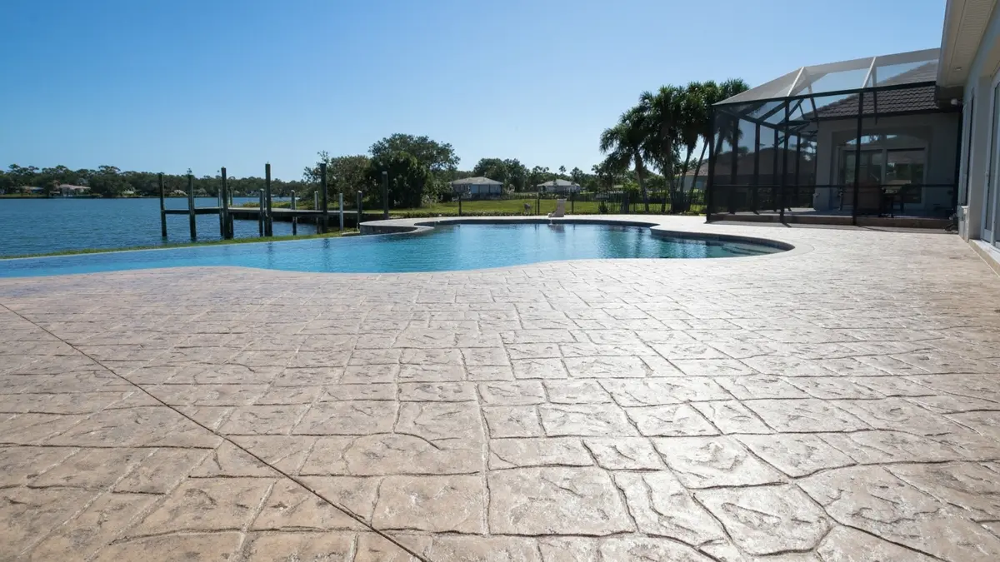

Apollo Beach is more than just a place to live; it's a lifestyle centered around the beautiful Tampa Bay waterfront. With its numerous boat ramps, private docks, and vibrant marina access, outdoor living is paramount. However, this idyllic coastal setting presents unique challenges for concrete surfaces. Constant exposure to salt spray, high humidity, and intense Florida sun can rapidly degrade bare concrete driveways, expansive patios ideal for entertaining, and essential pool decks. Without the right expertise and materials, these surfaces quickly succumb to unsightly cracks, spalling, and erosion. Apollo Beach homeowners specifically need durable, salt-resistant concrete solutions that not only withstand the elements but also enhance the beauty and value of their waterfront or water-adjacent homes, ensuring longevity and curb appeal.
Apollo Beach residents choose Tampa Concrete Pros because we're not just a generic concrete company; we're part of the local Tampa Bay community. Our team understands the specific environmental demands of southern Hillsborough County, from the unique soil compositions around MiraBay to the crucial need for proper drainage on waterfront properties. We're intimately familiar with local building codes, permitting requirements for coastal zones, and the aesthetic preferences that complement Apollo Beach's distinctive architecture. Our proximity means quicker response times, personalized site visits, and a commitment to quality that reflects our reputation within your community.
Our service advantages for Apollo Beach homeowners are directly tailored to your environment. We specialize in using high-strength, salt-resistant concrete mixes and advanced sealing techniques designed to combat the corrosive effects of salt spray and relentless humidity, which are critical for driveways, patios, and especially pool decks here. We prioritize durable, non-slip finishes for safety around pools and boat ramps, along with excellent drainage solutions to manage frequent rainfall. Choosing Tampa Concrete Pros means investing in concrete surfaces that not only look fantastic but are engineered to withstand Apollo Beach's unique coastal challenges for years to come.
Tampa Concrete Pros proudly serves the entire Apollo Beach community, a vibrant waterfront area situated in southern Hillsborough County, directly on the shores of Tampa Bay. Easily accessible via U.S. 41 and just a short drive from I-75, Apollo Beach is a prime location for those seeking a coastal lifestyle while maintaining close ties to greater Tampa, FL. We extend our expert services to all corners of Apollo Beach, from the exclusive Mirabay and Symphony Isles neighborhoods with their stunning waterfront properties, to the growing Waterset community, and along main thoroughfares like Apollo Beach Boulevard and West Shell Point Road. Whether you're near the Manatee Viewing Center or closer to the Apollo Beach Marina, our team is ready to deliver top-tier concrete solutions.
The cost for concrete driveways, patios, and pool decks in Apollo Beach varies widely based on square footage, concrete type (e.g., salt-resistant mixes), decorative finishes, and site preparation. Given the often larger home sizes and specialized materials needed for coastal conditions, projects typically range from $6 to $15+ per square foot. We provide free, detailed estimates tailored to your specific Apollo Beach project.
For a typical Apollo Beach home, installing a new concrete driveway, patio, or pool deck usually takes 3 to 7 days, including excavation, pouring, and initial curing. Larger or more complex projects, especially those requiring extensive drainage work or decorative finishes, might extend this timeframe. Weather conditions, particularly during Florida's rainy season, can also influence the schedule.
Yes, Tampa Concrete Pros proudly serves all residential and commercial areas within Apollo Beach. From the waterfront properties in Mirabay and Symphony Isles to the newer developments like Waterset, and along major roads such as Apollo Beach Blvd and U.S. 41, our team covers the entire community. We are committed to providing exceptional service across Apollo Beach.
Constant salt spray and high humidity in Apollo Beach accelerate concrete degradation, leading to spalling, efflorescence, and cracking. Salt penetrates the concrete, corroding internal rebar and causing expansion. To combat this, Tampa Concrete Pros utilizes high-strength, low-permeability concrete mixes, incorporates corrosion inhibitors, and applies specialized penetrating sealants that create a protective barrier. Proper drainage design is also crucial to minimize standing water and moisture absorption.
Ready to schedule your concrete driveways, patios, and pool decks service in Apollo Beach? Call us today or use the contact form above — we serve Apollo Beach and all surrounding areas of Tampa, FL. Most Apollo Beach jobs are scheduled within 48-72 hours.